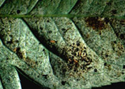
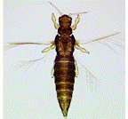

| Home |
| PEST OF ROSE |
mAJOR PESTES |
| 1. Rose thrips |
| 2. Red scale |
| 3. Red spider mite |
| 4. Rose aphid/lice |
mINOR PESTES |
| 1. Hairy caterpillar |
| 2. Castor semilooper |
| 3. Flower chaffer beetle |
| 4. Leaf folder |
| 5. Leaf cutting bee |
| Questions |
| Download Notes |
ROSE :: MAJOR PEST :: ROSE THRIPS
1. Rose thrips: Rhipiphorothrips cruentatus (Thripidae: Thysanoptera)
Distribution and status Cosmopolitan
Host range: Grapes,rose, Lagestoemia indica, Punica granatum.
Damage symptoms :
Nymph and adult lacerates leaves from the under surface of the leaves and flower buds. As a result white streaks appear on the infested leaves. Leaves show brown patches and get distorted, finally wither and drop down. Infested flowers do not open, flowers fade and drop down prematurely
|  |
Bionomics : Adults are blackish brown and nymphs are reddish in colour. Eggs are inserted into the tissues. A female lays about 45-55 eggs, nymph, adult period are 2-3 weeks and five days respectively.
|  |
Management:
Remove and destroy the damaged leaves, twigs and dlower buds along with the pest
Use yellow sticky traps at 15/ha to monitor activity of sap feeder
Spray neem oil 3% or methyl demeton 25 EC 1.0 L in 500-750 L of water per ha or apply carbofuran 3 G 5g/plant